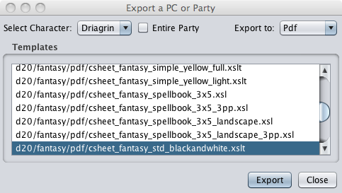

Export Options
The
Export
option allows the user to export a
character from PCGen to another format to be used or viewed by
other applications. It also allows you to export your character to
a human readable format that can be printed out and used in your
game without a computer.

When the user selects the
Export
option the
Export a PC or Party
window will pop up. The user
will then follow these steps.
-
Select the PC, or Party, that is to be exported from the
drop-down menu on the upper left hand side of the export
window.
-
Select the type of export to be done from the drop-down menu on
the upper right hand side of the export window.
-
Select the desired output sheet from those presented.
-
Click the
Export
button.
-
The
Save
window will open and the user will be
prompted to save the exported file.
-
Click the
Close
button to exit the export
window.